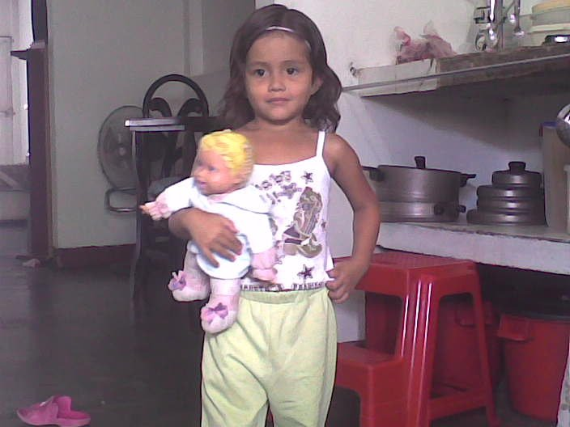
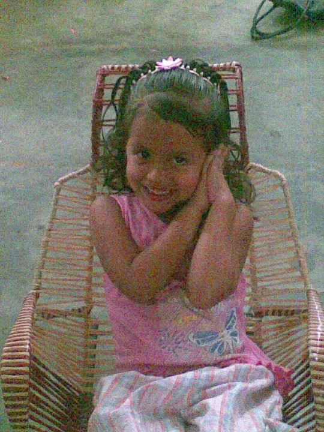

Irismenia Alviarez Alviarez Nacio el 29 de marzo de 2005 en Venezuela, Estado Tachira, Municipio San Cristobal en el hospital central a las horas de la madrugada, su madre Beysi Yolimar Alviarez Ramirez y su padre Jose Celestino Alviarez Jurado.
 Vivió en Hiranzo parte alta hasta los 11 años luego se mudo a la calle 14 donde vivio hasta sus 15 años, los ultimos de noviembre de 2020 ya que luego tuvo que irse a Colombia donde su llegada fue provivienda y luego se mudo para coovid donde actualmente esta viviendo.